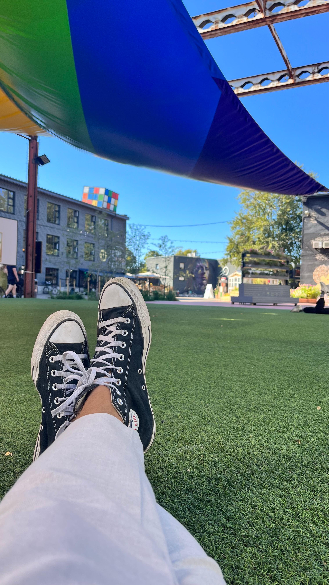

Telliskivi Creative City is not a neighborhood in the traditional sense. It is a compound -- a cluster of massive Soviet-era factory buildings and rail yards that somebody decided to fill with artists, entrepreneurs, bartenders, and chefs instead of tearing down. The bet paid off. Today this industrial campus next to the Balti Jaam train station is the single most concentrated stretch of good eating in Tallinn.
The buildings still look like factories from the outside. Raw concrete, rusted steel, graffiti-covered walls. But step through any door and you might find yourself in a candlelit dining room serving Slavic dumplings with Michelin-level precision, or standing in a shipping container courtyard eating a smash burger while a DJ plays vinyl. That contrast -- industrial grit meets creative ambition -- is what makes Telliskivi feel different from anywhere else in the city.
Technically, Telliskivi sits within the Kalamaja neighborhood, but it has its own gravitational pull. Where Kalamaja's residential streets are quiet and tree-lined, Telliskivi is loud, dense, and always changing. New pop-ups appear in empty units. The Saturday flea market takes over the courtyards. A gin distillery operates next door to a vintage clothing shop next door to an architecture firm. The restaurants feed that energy, and they draw from it too.
I have eaten at every place on this list repeatedly. Here is the honest guide.
Telliskivi vs. Kalamaja
This guide focuses specifically on restaurants inside the Telliskivi Creative City complex and its immediate borders. For the wider Kalamaja neighborhood -- including Noblessner Harbor, the residential streets, and spots like Lore Bistroo and 180 Degrees -- see our full Best Restaurants in Kalamaja guide.
1. Sit-Down Restaurants
Telliskivi's sit-down restaurants share a common thread: they all occupy converted industrial spaces, and they all punch well above what you would expect from a place with exposed ductwork and concrete floors. These are established kitchens with serious reputations, several operating for a decade or more.
F-Hoone
International All-Day DiningF-Hoone is the anchor of Telliskivi dining. It opened when the creative city was still half-empty and most Tallinners thought the area was too rough to visit after dark. More than a decade later, it remains the restaurant that everyone in the city has eaten at, and the one that most people come back to without thinking twice.
The setting does the heavy lifting on atmosphere: a cavernous industrial warehouse with soaring ceilings, exposed brick walls, and the kind of natural light that makes everything look good at lunch. The menu roams internationally -- Thai-spiced salmon coconut soup, pulled pork sandwiches, generous pasta dishes -- and somehow none of it feels like a kitchen trying to do too much. Everything is executed with real care, and the portions are notably generous for the price.
F-Hoone is my go-to pizza spot in Telliskivi. The chicken and waffles are excellent, and the loaded steak fries are a regular order, but it is the pizzas that keep me coming back. With a menu this wide, it is genuinely difficult to go wrong. In summer, after a padel match at the courts nearby, we always end up at F-Hoone for pizza and a cold beer -- it has become part of the routine.
Families take note: F-Hoone has a dedicated children's play room, which means adults can actually enjoy a meal without constant interruption. In summer, the outdoor terrace seats around 100 and becomes one of the best al fresco dining spots in Tallinn.
Price: Main courses ~10-18 EUR · Address: Telliskivi 60a · Good for: Families, groups, casual dinners, weekday lunches
Restaurant Moon
Slavic Cuisine -- Michelin Guide SelectedMoon has been one of Tallinn's most respected restaurants for 15 years, and its 2025 relocation to Telliskivi was a statement about where the city's dining center of gravity has shifted. The kitchen specializes in Slavic cuisine -- a tradition far richer and more varied than the borscht-and-blini cliches might suggest.
The handmade pelmeni are the dish to order first. Plump dumplings with delicate wrappers, filled with different meats and served either in rich broths or with generous dollops of sour cream and fresh herbs. The carp baked in sour cream is another standout -- a centuries-old Eastern European preparation given the precision of a Michelin-recognized kitchen. The new Telliskivi space is warmer and more intimate than Moon's original location, with the kind of dim lighting and unhurried service that makes dinner stretch pleasantly into the evening.
Price: Main courses ~14-24 EUR · Address: Telliskivi Creative City · Michelin: Guide Selected · Good for: Date night, winter dinners, Slavic food lovers
Peatus
Casual Dining in Railroad WagonsPeatus means "station" in Estonian, and the concept is literal: you eat inside authentic restored dining wagons from the old Tallinn-Moscow railway line. The carriages are parked permanently in the Telliskivi complex, and they have been lovingly refurbished with original compartments, overhead luggage racks, and vintage details that make the whole experience feel like stepping into a mid-century train journey that never departs.
Most of my Peatus memories are actually from late nights, when the restaurant transforms into a spot for drinks and dancing. But the food during the daytime is genuinely nice -- simpler, unpretentious, and served in an atmosphere you will not find anywhere else. It is not uncommon to grab a quick bite in Peatus during the day and then come back that same night for one too many drinks.
The food is honest and unpretentious. Good burgers, solid pizzas, a selection of beers on tap. Nobody comes to Peatus expecting molecular gastronomy, and that is exactly the point. The novelty of the setting does most of the work, and it does it well. Kids love it. Groups find it memorable. On warm days, the area around the wagons turns into an impromptu hangout with outdoor seating and a ping pong table that draws a small crowd of competitive locals.
Price: ~8-14 EUR per dish · Address: Telliskivi 60 · Good for: Families, groups, tourists, casual lunch · Extra: Outdoor ping pong
Fotografiska Restaurant
Sustainable Fine Dining -- Michelin Green StarFotografiska's sixth-floor restaurant sits atop the photography museum at Kai Art Centre in neighboring Noblessner Harbor -- a 10-minute walk north from Telliskivi along the waterfront. It holds a distinction no other restaurant in Estonia can claim: four consecutive Michelin Green Stars for sustainable gastronomy. The kitchen operates on a leaf-to-root, nose-to-tail, zero-waste philosophy. Every ingredient is locally or regionally sourced -- some foraged, some grown in the rooftop herb garden where three bee colonies also reside.
The menu is plant-forward but not dogmatic. Expect dishes built around Estonian seasonal produce with occasional appearances of sustainably raised meat and fish. The presentation is refined without being fussy, and the panoramic views over Tallinn from the dining room add a dimension that no ground-floor restaurant can match. You do not need a museum ticket to eat here, but combining dinner with an exhibition visit makes for one of the best evenings in the area. A rooftop bar operates in summer.
Price: Tasting menus ~55-75 EUR · Address: Kai 1, Noblessner Harbor · Michelin: Green Star · Good for: Special occasions, date night, sustainable dining
Save at Telliskivi Restaurants
Nomi Pass members get 15-20% off the bill at partner restaurants across Telliskivi and the rest of Tallinn. One membership covers your whole table.
Join the Waitlist2. Depoo Street Food Hall
Depoo is Telliskivi's open-air street food court: a courtyard lined with repurposed shipping containers, each housing a different kitchen. The result is one of the most fun, affordable, and reliably good places to eat in Tallinn.
The beauty is flexibility. A group of four eats four different cuisines, meets back at a communal table, and everyone pays under 12 euros. On weekends, live music fills the courtyard and the whole place takes on a low-key festival energy.
Depoo is a tried and tested way to get late-night food after a night out in Telliskivi. Some of my memories of specific stalls are, admittedly, a little fuzzy -- but I know that whenever I find myself there at an odd hour, the food is reliable and can be a massive help in minimizing the damages the next morning.
Dereku Burger
Smash BurgersDereku is the container you should hit first. Their smash burgers are among the best in Tallinn -- thin patties pressed hard onto a screaming-hot griddle until the edges crisp and caramelize, stacked on house-baked buns with carefully balanced toppings. The meat is freshly ground, the cheese is properly melted, and the sauces are made in-house daily. The double smash with pickles and their signature sauce is the move.
Price: Burgers ~7-12 EUR · Location: Depoo, Telliskivi · Order: Double smash burger with signature sauce
Spice Wagon
Indian Street FoodSpice Wagon brings authentic North Indian street food to a shipping container at Depoo, and it does so with the kind of conviction that makes you forget you are eating outdoors in Estonia. The curries are the draw -- rich, properly spiced, and served with freshly made naan. Paneer dishes and palak paneer are standouts for vegetarians, while the tandoori options satisfy anyone looking for something charred and smoky. Everything is made fresh to order, and the portions are generous for the price.
Price: ~6-11 EUR · Location: Depoo, Telliskivi 62 · Order: Paneer curry with naan
Margot
Crepes & GalettesMargot brings Breton crepe tradition to a shipping container. Buckwheat galettes with savory fillings -- ham and cheese, smoked salmon, mushrooms and cream -- are the substantial option. Sweet crepes loaded with Nutella, fresh berries, or caramelized apples are the indulgent one. Made on a traditional billig griddle right in front of you, thin and lacy with crisp edges. This is the Depoo container that families gravitate toward, and the best sweet finish to a meal started at Dereku or Spice Wagon.
Price: ~5-10 EUR · Location: Depoo, Telliskivi · Order: Buckwheat galette with ham and cheese, or Nutella crepe
Depoo Seasonal Note
Depoo is primarily an outdoor venue. In summer (May-September) it operates at full capacity with all containers open and live music on weekends. In winter, some containers close or reduce hours, though the core vendors like Dereku Burger tend to stay open year-round. Check before making a special trip in January.
3. Bars & Casual Drinking
Telliskivi is where Tallinn goes out. The concentration of bars within the creative city complex means you can spend an entire evening moving between venues without ever hailing a cab or walking more than two minutes. The range spans from craft gin distillery to punk-rock dive, and the best part is that most of these places also serve decent food.
Junimperium Gin Bar
Craft Gin Distillery & BarJunimperium is Estonia's most celebrated gin brand, and their Telliskivi bar doubles as a tasting room where you can try the full range alongside gin-forward cocktails that showcase the product without burying it. The space is sleek and modern -- a sharp contrast to Telliskivi's usual industrial rawness -- with a long marble bar and atmospheric lighting that makes the bottles glow.
The bartenders know their product and are genuinely happy to guide you through a tasting flight. The classic London Dry is excellent, but ask about seasonal and limited editions. Food is limited to well-chosen bar snacks -- charcuterie, olives, nuts -- making this a pre-dinner or after-dinner stop, not a meal destination.
Whether you enjoy Junimperium depends partly on whether you are a gin person -- I am. It is a great alternative when you want to meet up with friends but do not feel like a regular bar. They often release limited editions and seasonal gins, and there is no better place to try them than at the bar where they are made.
Price: Cocktails ~10-14 EUR, tasting flights ~15-20 EUR · Address: Telliskivi Creative City · Good for: Cocktail lovers, date night, pre-dinner drinks
Pudel Baar
Dive Bar & Live MusicPudel Baar is the antithesis of everything polished in Telliskivi, and it is beloved for exactly that reason. After being evicted from its original space in early 2022, Pudel reopened later that year in a larger, renovated hall at Telliskivi 62 near the Depoo square. The new digs are more spacious and comfortable, but the spirit remains unchanged: cheap beer, no pretense, a sound system that somehow always sounds right, and a crowd that comes to actually listen to music rather than pose for social media.
The live music program is still the draw. Local bands, touring acts, DJs, experimental sound nights -- the bookings range across genres but consistently favor the interesting over the commercial. Beers are cheap by Tallinn standards, and the atmosphere improves in direct proportion to how late you stay. This is a place for a loud Saturday night that ends at 3am with ringing ears and new friends.
Price: Beers from ~4 EUR · Address: Telliskivi 62 · Good for: Live music, late nights, cheap drinks · Vibe: Loud, authentic, no pretense
Tops Baar
Casual Bar & KitchenTops fills the middle ground between Telliskivi's polished bars and its outright dives. A solid tap list of local and international craft beers, a compact cocktail menu, and elevated bar snacks -- loaded fries, tacos, wings -- that satisfy without demanding attention. The outdoor terrace is one of the better people-watching spots in Telliskivi, and on summer evenings it fills up fast.
Price: Beers ~5-7 EUR, food ~6-12 EUR · Address: Telliskivi Creative City · Good for: Groups, casual evenings, beer
For a broader survey of drinking in Tallinn, including cocktail-focused spots beyond Telliskivi, see our Best Cocktail Bars in Tallinn guide.
4. Coffee & Sweets
Telliskivi's creative workforce runs on coffee, and the competition among the complex's cafes keeps the quality high. Each one has a point of view about sourcing, roasting, and brewing, and the pastry programs alongside them are worth visiting even without caffeine as motivation.
Kalamaja Pagarikoda
Artisan BakeryKalamaja Pagarikoda sits at the edge of the Telliskivi complex, and some mornings the smell of fresh bread reaches you before you see the sign. The bakers work through the night to fill the shelves before the 7:30am opening, and by mid-morning on weekends the best items are gone. Arriving early is not a suggestion -- it is a requirement if you want the cinnamon rolls.
Those cinnamon rolls deserve their reputation. Spiraled, sticky, generously spiced, and warm from the oven if your timing is right. But the real revelation is the bread: dark Estonian rye loaves with a dense, tangy crumb; crusty sourdough that could compete with any bakery in Berlin; and seeded loaves that feel like they weigh as much as a small dog. Grab a loaf, a pastry, and a coffee, and eat them on a bench in the Telliskivi courtyard. That is a perfect Tallinn morning for under five euros.
Price: Pastries ~2-5 EUR, bread ~3-6 EUR · Address: Near Telliskivi / Kalamaja border · Hours: Opens 7:30 weekdays · Tip: Arrive early for cinnamon rolls
The Brick Coffee Roastery
Specialty Coffee RoasteryThe Brick is a proper roastery with a brew bar attached, tucked inside the Telliskivi complex at 60M. Single-origin beans are roasted on-site in small batches with an emphasis on ethical and sustainable sourcing, and the baristas brew with the kind of precision that coffee geeks appreciate and normal humans benefit from without necessarily understanding why their flat white tastes better here than elsewhere.
The space is small and cozy -- the roaster sits behind the counter in full view, bins of fresh beans line the walls, and there are just enough seats to enjoy a cup without feeling rushed. Not a place to camp with a laptop for three hours. It is a place to drink a genuinely excellent cup of coffee, buy a bag of beans, and get on with your day. The pour-over and filter options rotate with new roasts, and the espresso-based drinks are consistently among the best in the Telliskivi complex.
Price: Coffee ~3-5 EUR · Address: Telliskivi 60M · Good for: Coffee enthusiasts, quick stop · Extra: Beans available to purchase
Aarde Pagar
Artisan Bread Bar · Reservation OnlyAarde Pagar might make the best bread in Estonia. That is not hyperbole -- it is the quiet consensus among Tallinn's food community. This tiny bread bar at Telliskivi 60a/1 bakes only one kind of bread, "Aarde Black," a dark sourdough with subtle notes of honey that has earned a devoted following. The bakery operates more like a chef's table than a cafe: ten guests per serving, reservation required with prepayment, and a set menu built entirely around that extraordinary bread.
Each course is an open sandwich on Aarde bread, topped with seasonal ingredients sourced from small Estonian producers -- think smoked fish, fermented vegetables, fresh herbs, and house-made spreads. The shakshuka, served in a cast-iron skillet alongside thick slices of the sourdough, has become a signature. Natural juices and beverages made from unsold bread round out the experience. It is intimate, intentional, and unlike anything else in Telliskivi. Book through their website -- walk-ins are not possible.
Price: Set menu ~15-20 EUR · Address: Telliskivi 60a/1 · Hours: Tue-Sat 8:30-13:30 · Booking: Required via aardepagar.ee · Seats: 10 per serving
5. Balti Jaama Turg Market
Balti Jaama Turg (Baltic Station Market) sits directly next door to Telliskivi -- a 30-second walk -- and is an essential part of the dining experience here. The ground floor houses food stalls and lunch counters serving everything from Georgian khachapuri to Estonian smoked fish. Prices are lower than most Telliskivi restaurants. The upper floors sell fresh produce, meats, cheeses, and Estonian specialty goods.
Whenever I need quality meats, vegetables, or fruits -- whether I am cooking dinner for friends or just making something nice for myself -- this is where I end up. Those shopping trips are always accompanied by grabbing a bite from one of the food court stalls upstairs. You genuinely cannot go wrong with any of them.
Market Lunch Tip
Several stalls serve hot lunch plates for 6-9 EUR -- soups, stews, grilled meats with sides. Look for the counters with the longest queues of office workers around noon. For more budget ideas, see our Cheap Eats in Tallinn guide.
6. Practical Tips for Visiting Telliskivi
Getting There
Telliskivi sits next to the Balti Jaam (Baltic Station) train station. From Old Town, walk north for about 10 minutes -- pass through the Balti Jaam underpass and you emerge right at the Telliskivi entrance. Tram lines 1 and 2 stop at Balti Jaam. If arriving by train from Tartu or elsewhere in Estonia, you step off the platform directly into the complex.
Best Times to Visit
- Weekday lunch (12:00-14:00): The best value. F-Hoone, Moon, and others offer business lunch specials at reduced prices.
- Saturday afternoon: Telliskivi at its most alive. The flea market fills the courtyard, Depoo has live music, terraces are full. Arrive by noon.
- Summer evenings (June-August): Outdoor terraces stay lively past 10pm. The sun does not set until nearly midnight in June.
- Weekday evening (Tue-Thu): Sit-down restaurants without weekend crowds. No reservations needed at most places.
The Saturday Flea Market
Every Saturday from roughly 10am to 4pm in the main courtyard (weather permitting). Local sellers, vintage dealers, small makers with handmade goods. Combine a market visit with lunch at Depoo or F-Hoone.
Reservations
Walk-ins work on weekdays at most places. For weekend dinners, reserve at F-Hoone or Moon. Junimperium does not take reservations. Depoo, Peatus, and the cafes are first-come, first-served.
Combining Telliskivi with Kalamaja
Telliskivi is the natural starting point for exploring wider Kalamaja. Walk 10 minutes north to Noblessner Harbor for waterfront cocktails, or wander the residential streets for quieter neighborhood spots. Our Kalamaja dining guide covers the full neighborhood.
What to Expect Price-Wise
A Depoo burger or bakery pastry costs 5-8 EUR. A sit-down meal at F-Hoone or Moon runs 15-25 EUR per person. Cocktails at Junimperium land around 10-14 EUR. Compared to Old Town, Telliskivi is generally 15-25% cheaper for comparable quality -- and the food is often better. For more budget options, see our Cheap Eats in Tallinn guide.
Eat More, Spend Less in Telliskivi
Nomi Pass members save 15-20% at partner restaurants in Telliskivi and across Tallinn. The pass covers your entire table, so the more you eat out, the more you save.
Join the Waitlist7. Frequently Asked Questions
What is Telliskivi Creative City?
A former Soviet-era industrial factory complex in Tallinn, transformed into the city's largest creative hub. Located next to Balti Jaam train station in the Kalamaja neighborhood, it houses restaurants, cafes, bars, design shops, galleries, a cinema, and startup offices. It is the single most concentrated stretch of dining and cultural activity in Tallinn.
How do I get to Telliskivi Creative City?
Walk north from Old Town for about 10 minutes, through the Balti Jaam (Baltic Station) area. Tram lines 1 and 2 stop at Balti Jaam, putting you at the entrance. If arriving by intercity train, the Telliskivi buildings are adjacent to the platform. The area is compact and flat, easy to explore on foot.
Is Telliskivi Creative City the same as Kalamaja?
Telliskivi is located within Kalamaja but has its own identity. Kalamaja is a broader residential neighborhood of colorful wooden houses and waterfront developments. Telliskivi is a specific compound of converted industrial buildings that functions as the neighborhood's commercial and dining hub -- louder, denser, and more visitor-oriented than the surrounding streets.
What are the best cheap eats in Telliskivi?
Depoo Food Street is your best bet, with most dishes 5-12 EUR. Dereku Burger, Spice Wagon, and Margot are the standout containers. Kalamaja Pagarikoda bakery offers pastries from around 2 EUR. The adjacent Balti Jaama Turg market hall has lunch counters at 6-9 EUR.
When is the best time to visit Telliskivi?
Saturday is the liveliest day, with the flea market (10am-4pm) and live music at Depoo. For the best dining deals, come on a weekday between noon and 2pm for business lunch specials. Summer evenings (June-August) are ideal for outdoor terraces. For a quieter experience, try Tuesday through Thursday evenings.
Keep Exploring Tallinn
Telliskivi is the starting point, not the finish line. These guides cover more of Tallinn's dining landscape:
- The Complete Tallinn Food Guide -- an overview of every neighborhood and cuisine in the city
- Best Restaurants in Kalamaja -- the full neighborhood including Noblessner Harbor and residential streets
- Cheap Eats in Tallinn -- the best meals in the city for under 15 euros
- Best Cocktail Bars in Tallinn -- where to go after dinner